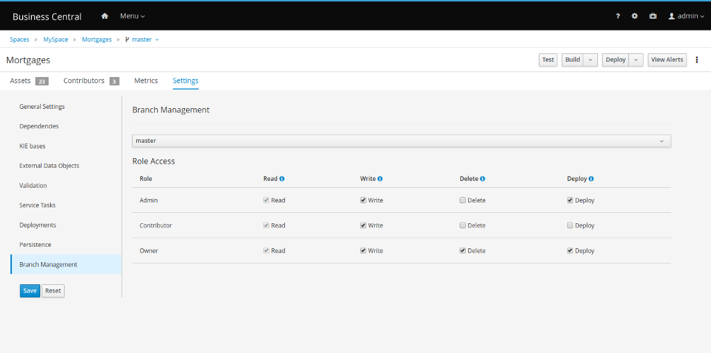

Role based access control for branches on Business Central
To continue the work done in the Contributors feature, another functionality was added to evolve the new way to manage security permissions in Business Central: role based access to branches.
This feature can be found in a new project settings section, where the user can customize which contributors’ roles have which permission for each project branch.

This is pretty useful when, for instance, you want to freeze a release branch only for some roles. Take a look at the demo:
Keep in mind that for now, the security check is using both sources (Security Management screen and contributors) to grant or deny permissions to spaces and projects (Inclusive OR). For instance, when the user has the security permission to update a project and/or has write permission on that branch (based on the contributor type), then he or she will be able to create new assets. These are our security configurations for this demo:

Role based access control for branches on Business Central was originally published in kie-tooling on Medium, where people are continuing the conversation by highlighting and responding to this story.